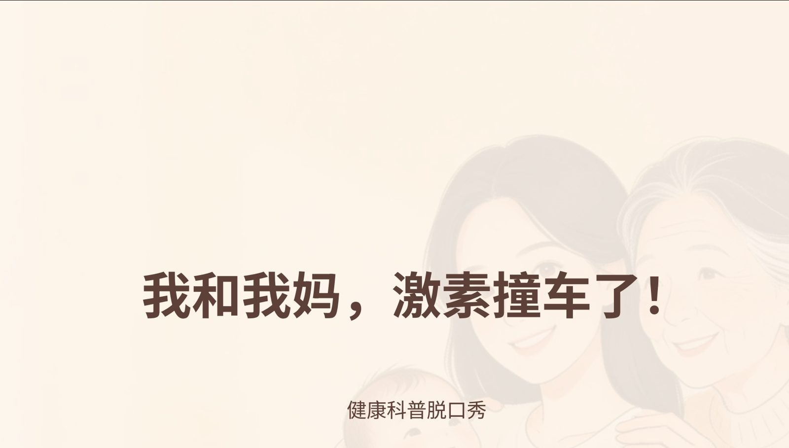

YIBEN ZHENGJING / VOL. 01健康科普 × 综艺表达 × AI
TAKE
01
搞点有趣的● ON AIR
VARIETY VISUAL LAB
01
一本正经!
认真搞点有趣的● ON AIR
VARIETY VISUAL LAB
知识很认真。
表达可以不一样。
表达可以不一样。
好戏，开场。↗
让健康知识
被看见、看懂、记住。
THE SERIOUSLY ENTERTAINING EXPERIMENT
把严肃的知识，
变成愿意看完的好故事。
用故事组织知识，用视觉引发好奇，用 AI 串起创作。
从社区宣传栏到手机屏幕，让科普拥有自己的综艺感。
从社区宣传栏到手机屏幕，让科普拥有自己的综艺感。
PRODUCTION / 一本正经健康知识
现在开拍SCENE 01 TAKE ∞▶
现在开拍SCENE 01 TAKE ∞▶
122组原作 + 10组实验
08理论观察视角
06创作流程模块
知识是内容。好看是入口。NEXT / SHOWCASE ↓
ACT 02 / SELECTED WORKS不是换个颜色，是换种讲法。
作品上场✳
同一主题，
两种表达。
CASE 01 / 情感共鸣
我和我的妈，激素撞车了！
从家庭里的情绪碰撞切入，让一家三代成为一起通关的队友。

‹ ›
← 拖动分界线，看看表达如何改变 →传统 45% / 综艺 55%
2组原站海报 / 10组原创概念实验NEXT / THE METHOD ↓
ACT 03 / BEHIND THE SCENES有趣的背后，有逻辑。
幕后逻辑✦
三大维度，八项理论。
理解表达的工作方式。
不是把知识娱乐化消解，
是给知识一条更容易抵达的路。
是给知识一条更容易抵达的路。
事实 × 故事 × 视觉 = 被记住的知识
THE NARRATIVE ARC / 综艺叙事六要素
人设→悬念→冲突→高潮→反转→价值
每一个知识点，都可以有自己的出场方式。
点击理论卡片，查看概念与创作启发。NEXT / STYLE RESEARCH ↓
ACT 04 / VARIETY STYLE ATLAS从栏目，到自己的表达。
好看，有章法。✳
20档节目 · 10类风格
8个重点叙事样本
THE MECHANISM BEHIND THE SHOW先决定怎样讲，
先决定怎样讲，
再决定怎样好看。
人物怎样出场，问题怎样提出，答案怎样揭晓？
从具体栏目提炼叙事机制，让视觉跟着故事走。
20节目样本10风格方向08重点拆解
RESEARCH NOTES / 2026.10.31
风格分类与叙事公式为编辑分析。重点样本已核对节目入口、简介及部分字幕；视觉与声音建议为迁移设计，尚未做逐帧实测。
把参考，变成自己的创作方法。NEXT / THE FACTORY ↓
ACT 05 / THE VISUAL FACTORY一个人，一支 AI 视觉军团。
现在，开机。↗
从一个主题，
到一套可交付内容。
✳CREATIVE ENGINE / 06 MODULES /
A CONNECTED WORKFLOW
把灵感，接上生产线。
需求录入 → 文案生成 → 视觉匹配
批量渲染 → 内容复核 → 打包交付
ART DIRECTION / 两种表达温度
同样认真，各有风格。
根据受众调整视觉节奏，而不是让所有人看同一张图。
AI 辅助创作，专业判断贯穿全程。NEXT / MEET THE CREATOR ↓
ACT 06 / MEET THE CREATOR从白大褂，到视觉实验。
本期主理人✦
用专业与热忱，
让健康知识走进日常。
THE CREATOR
QIANG BINGQIN认真
出镜
QIANG BINGQIN认真
出镜
HEALTHCARE × AI × VISUAL STORYTELLING
强冰沁
QIANG BINGQIN
宜兴市宜城预防保健所 · 党政办副主任
主管护师 · 中医康复理疗师
“让严肃知识，
拥有有趣的表达。”
01
专业是起点
护理与基层预防保健实践
02
传播是连接
社区、校园与健康宣讲
03
创作在发生
综艺化表达与 AI 工作流
© 2026 一本正经 / 综艺视觉实验THAT'S A WRAP. / 好戏待续。